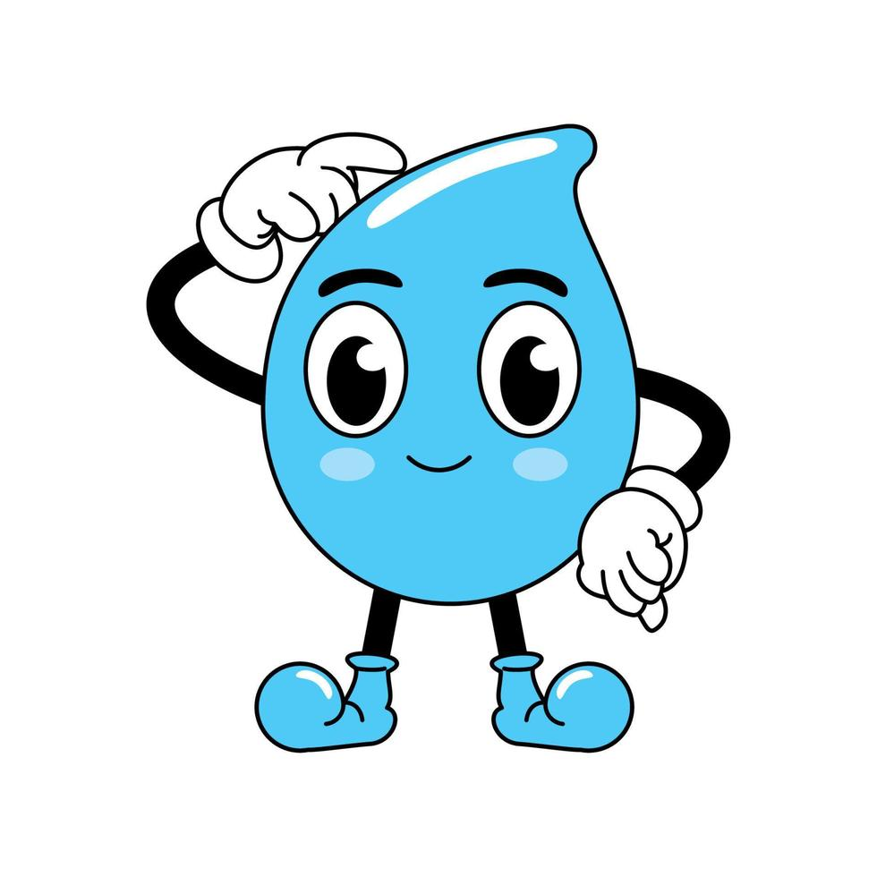

Había una vez una pequeña gota de agua llamada Gotita vivía feliz en un río de agua H2O cristalino que corría entre montañas verdes y prados llenos de flores. Cada mañana, el sol la saludaba con sus rayos dorados, y los peces jugaban a su alrededor.
—¡Hola, Gotita! —decía el pez Nemo—., ¿Listo para otro día de aventuras?
—¡Claro! —respondía Gotita, rebotando suavemente sobre las olas —. , Me encanta viajar con el río.
Pero un día, algo mágico pasó. El sol brilló con más fuerza que nunca, y Gotita sintió un cosquilleo en todo su cuerpo.
—¡Ay! —dijo—., ¡Me siento más ligera!
De pronto, empezó a elevarse lentamente, como si tuviera alas invisibles. ¡Estaba evaporándose!
Y así, Gotita subió y subió, hasta convertirse en una pequeña nube blanca en el cielo.
Para saber más sobre el ciclo del agua, visita este enlace.

Allí arriba, Gotita no estaba sola. Conoció a muchísimas otras gotas de agua que también habían subido desde ríos, lagos y mares.
Se tomaron todas de las manos y juntas formaron una nube grande y esponjosa, como de algodón.
¡Era muy divertido flotar juntas por el cielo, empujadas por el viento!
"¡Qué blandita es nuestra casa nueva!", decían riendo. A esto, una gota más sabia les explicó que se llama condensación. La nube se hizo más y más grande a medida que llegaban más y más amigas gotas.
Una por una, comenzaron a caer de nuevo hacia la Tierra en forma de lluvia. ¡Y a esto se le llama precipitación! Después de mojar el bosque, Gotita comenzó a fluir por un pequeño arroyo.
—¡Bienvenida de vuelta, Gotita!, dijo el río con un murmullo.
Y así, Gotita continuó su viaje en el gran ciclo del agua, lista para volver a subir, caer y ayudar a la Tierra a vivir.